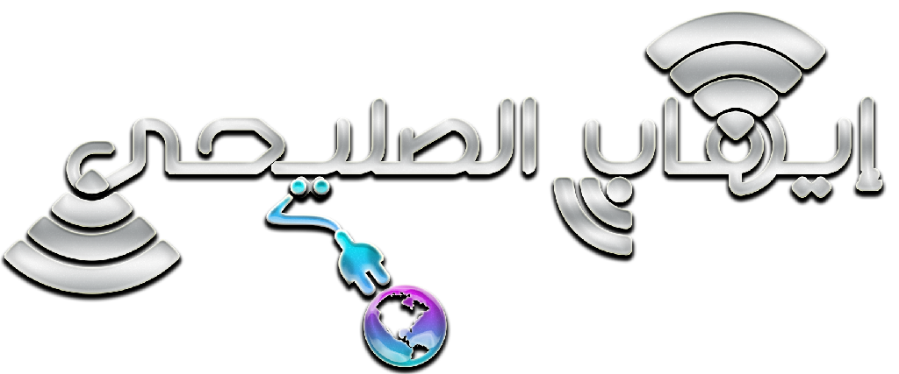

الصفحة الرئيسية
الكروت
تنبيهات
مواقع
حول

شبكة إيهاب الصليحي
التنبيهات
إستخدم الانترنت في تنمية المهارات الفكرية والعلمية واكتساب خبرات تفيدك في حياتك. وتجنب الولوج للمواقع الاباحية حفاظا على شخصيتك واخلاقك وقيمك.
إستخدام الروت او الجلبريك قد يعرض هاتف للتلف او الفيروسات.
الغاء التحميل التلقائي للملفات الصوتية والصور والفيديو في الواتس اب والتلغرام يوفر سرعة تصفح ممتازه وتوفير في كمية التحميل
استخدام برامج التحميل الداعمة لاستئناف التحميل بعد الانقطاع مثل ADM.
تجنب استخدام برامجVPN وكسر البروكسي.
الرقابة الابوية للابناء وماهي المواقع والبرامج المحمله علي هواتف ابنائهم بشكل متواصل.
تحفيز الشباب على الرقي بانفسهم وانتقاء كل مفيد في عالم الانترنت.
كروت الشبكة متوفرة في كل بقالات المنطقة التي توجد فيها تغطية
معلومات الدعم
للإبلاغ عن مشاكل الشبكة والكروت:
يتم أرسال المشاكل او الكرت برسالة نصية او واتساب وسيتم الدر عليها فور قراءتها أو الاتصال على الرقم المدون في الكرت.